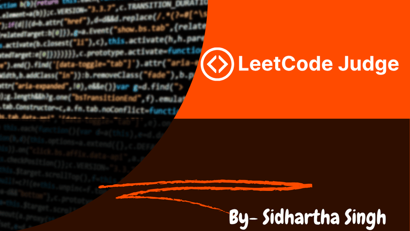

LeetCode Judge
A Full-Stack Code Execution and Judging Environment
Overview & Problem Solved
LeetCode Judge is a lightweight, self-hosted coding problem evaluation platform built to simulate the LeetCode experience. Designed for developers, educators, and students, it enables users to write, run, and evaluate code against test cases in real-time through a clean, interactive interface.
Key Features
- Live Code Execution & Evaluation:
- Users can write and run code directly in the browser.
- Backend evaluates submissions against hidden test cases.
- Returns output, errors, and pass/fail status in real time.
- Admin-Controlled Problem Management:
- Admins can add/edit/delete coding problems with metadata.
- Each problem supports title, description, constraints, difficulty level, and test cases.
- JSON or DB-based problem storage for flexibility.
- Lightweight, Full-Stack Architecture:
- Flask handles API requests, code execution, and test validation.
- Frontend built with HTML/CSS/JavaScript or extendable with React.
- Minimal dependencies, deployable on low-resource servers.
Technologies
Implementation
I designed and developed both the frontend and backend of the LeetCode Judge project. My responsibilities included building the code editor interface, implementing secure code execution on the backend using Python and Flask, and setting up problem management via JSON or database. I made architectural decisions focused on simplicity, extensibility, and safety.
On the backend, I used Flask to create a REST API that handles code submissions. Each submission is securely executed using Python's subprocess module with sandboxing constraints (timeouts, input validation, and output capturing). The submitted code is tested against predefined hidden test cases, and a comparison engine checks for correctness while tolerating minor formatting differences.
On the frontend, I created a responsive and user-friendly interface that mimics platforms like LeetCode. The editor supports input/output fields and displays results dynamically. Problems are defined in JSON format and loaded dynamically, making the platform easily scalable for additional problems or categories.
The design separates core logic into reusable modules, keeping concerns isolated between frontend rendering, backend execution, and test validation. This makes it easy to plug in support for new languages, expand admin functionality, or integrate authentication if required.

Challenges & Solutions
One of the major technical challenges was executing user-submitted code securely on the server. Untrusted code can cause infinite loops, memory exhaustion, or even system compromise if not sandboxed properly. Initially, naive execution using eval and exec proved unsafe and unstable.
I overcame this by using Python’s subprocess module with timeouts, isolated processes, and restricted inputs. I implemented logic to prevent infinite loops, capped memory usage, and sanitized input/output. This ensured safe execution while maintaining responsiveness.
Another challenge was designing a clean, extensible architecture that separates the frontend interface, backend logic, and problem/test case management. I solved this by modularizing the codebase: problems are loaded via structured JSON, the backend validates output in a pluggable way, and the UI dynamically adapts based on problem metadata.
Through this project, I learned secure code execution patterns, better separation of concerns in full-stack apps, and how to handle edge cases in automated test evaluation systems. I also sharpened my frontend skills using clean UI principles and responsive layouts for developer tools.
Outcomes & Impact
The LeetCode Judge project successfully achieved its goal of creating a functional, lightweight coding evaluation platform that mimics core features of professional online judges. It serves as a self-hosted alternative for practicing coding problems, running test cases, and managing problem sets with ease. The system has been tested with multiple problems and submissions, demonstrating reliable execution and accurate validation.
This project showcases my full-stack development capabilities — from designing responsive UIs to handling secure backend execution workflows. It reflects my ability to solve complex problems such as sandboxed code execution, modular architecture design, and test automation. The LeetCode Judge not only demonstrates technical depth, but also highlights my initiative to build practical, developer-focused tools from the ground up.